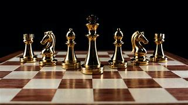
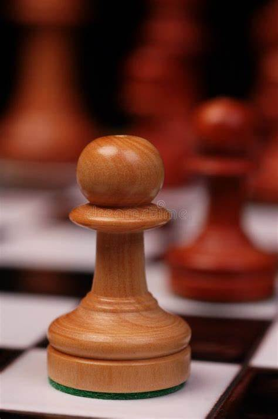
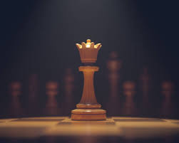
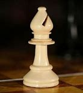
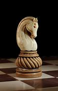
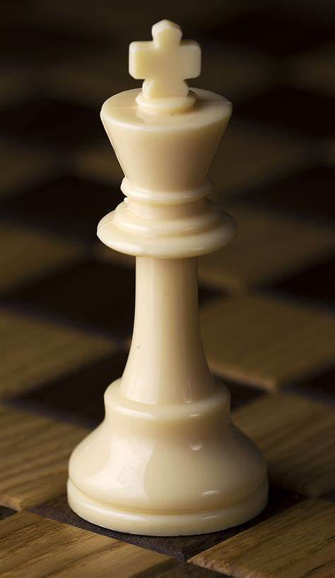

Chess is one of the oldest and most popular board games. It is played by two opponents on a checkered board with specially designed pieces of contrasting colours, commonly white and black. The objective of the game is to capture the opponent's king.
RULESchess originated in India.[3] There, its early form in the 7th century CE was known as chaturaṅga (Sanskrit: चतुरङ्ग), which translates to "four divisions (of the military)": infantry, cavalry, elephantry, and chariotry. These forms are represented by the pieces that would evolve into the modern pawn, knight, bishop, and rook, respectively.[4] Chess was introduced to Persia from India and became a part of the princely or courtly education of Persian nobility. The earliest precursor of modern chess is a game called chaturanga, which flourished in India by the 6th century, and is the earliest known game to have two essential features found in all later chess variations—different pieces having different powers (which was not the case with checkers and Go), and victory depending on the fate of one piece, the king of modern chess.[17] A common theory is that India's development of the board, and chess, was likely due to India's mathematical enlightenment involving the creation of the number zero.[6] Other game pieces (speculatively called "chess pieces") uncovered in archaeological findings are considered as coming from other, distantly related board games, which may have had boards of 100 squares or more.[18][non-tertiary source needed] Chess was designed for an ashtāpada (Sanskrit for "having eight feet", i.e. an 8×8 squared board), which may have been used earlier for a backgammon-type race game (perhaps related to a dice-driven race game still played in south India where the track starts at the middle of a side and spirals into the center).[19] Ashtāpada, the uncheckered 8×8 board served as the main board for playing chaturanga.[20] Other Indian boards included the 10×10 Dasapada and the 9×9 Saturankam.[20] Traditional Indian chessboards often have X markings on some or all of squares a1 a4 a5 a8 d1 d4 d5 d8 e1 e4 e5 e8 h1 h4 h5 h8: these may have been "safe squares" where capturing was not allowed in a dice-driven backgammon-type race game played on the ashtāpada before chess was invented
There are thirty-two Chessmen-sixteen of each color that are used in the game. Since white
always makes the first move, it is important to choose to see who will make the first move. The
two players move alternately. The same player can never make two consecutive moves.
The relative strength as to value of the piece is
| Pawn |  | The pawn can move only in a forward direction. From its starting position the pawn may be moved one or two squares. However, after that it may be moved only one square at a time. Since the pawn cannot leap over any piece, any chessman directly in front of it blocks further advance of the pawn. A pawn may only capture an enemy piece that is on the square in front of it diagonally. If your pawn is able to reach the end row on the board, you may replace it with any piece (except a king). |
|---|---|---|
| Rook | |
The rook can move either horizontally or vertically (but not both on the same move). |
| Queen |  | The queen is the strongest piece in the game. It may move in eight directions-commanding all the squares in any of these various directions. It cannot jump over another pie |
| Bishop |  | The bishop can only move diagonally and in one direction at a move. Each bishop is on a different color and commands that color only. |
| Knight |  | The knight is the only chessman that can move over its own or opponent's pieces. The Knight moves two spaces in a row and one over. |
| King |  | Moves in every direction but takes only one step |